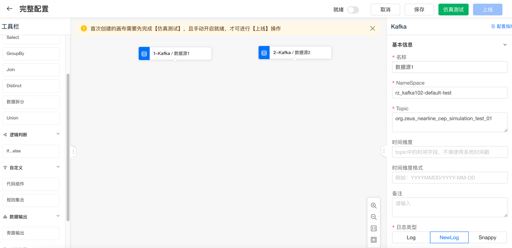
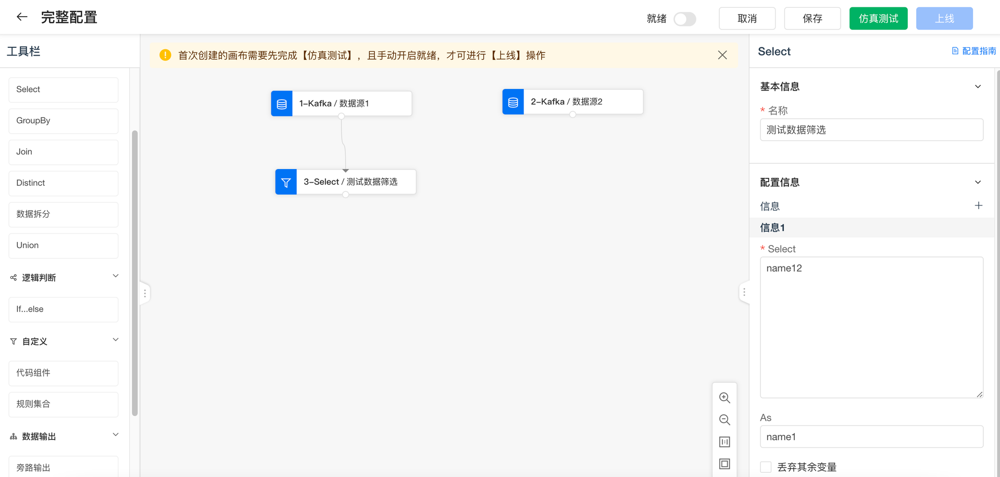
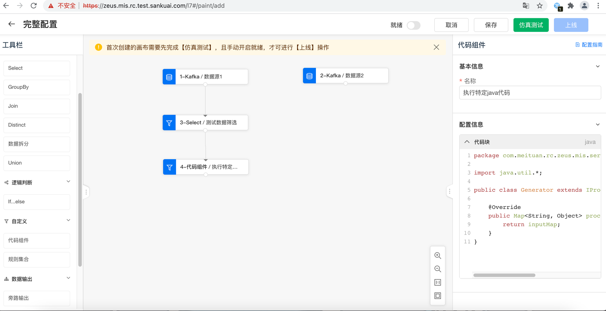
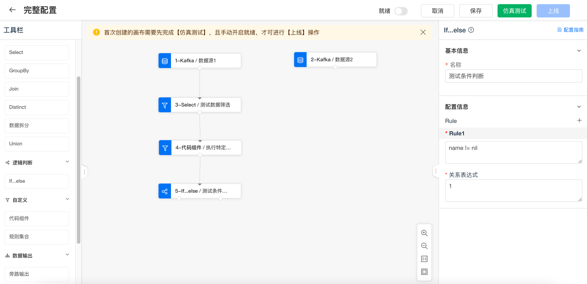
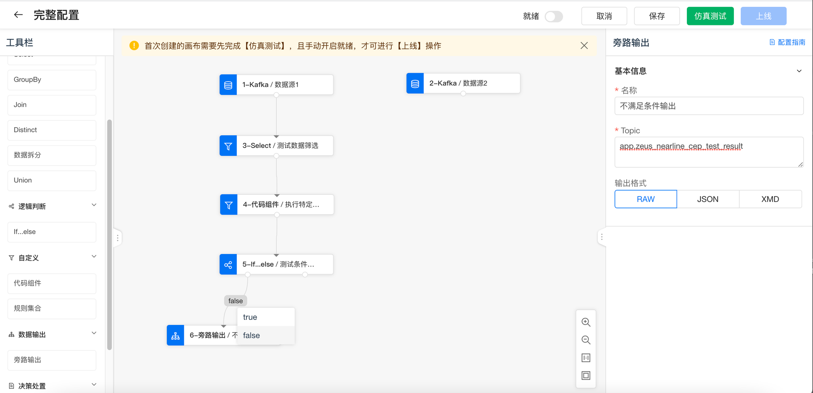
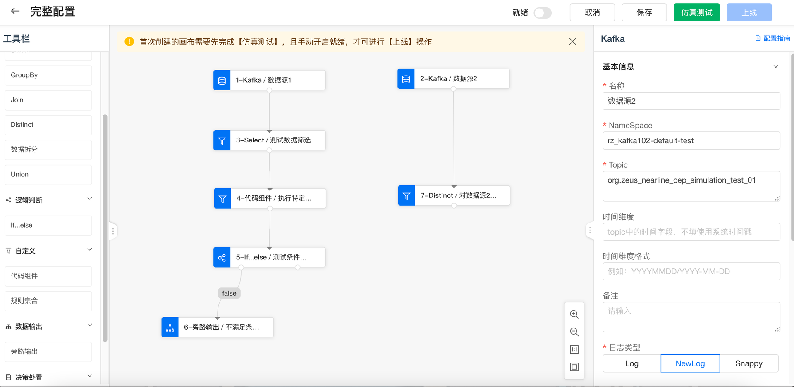
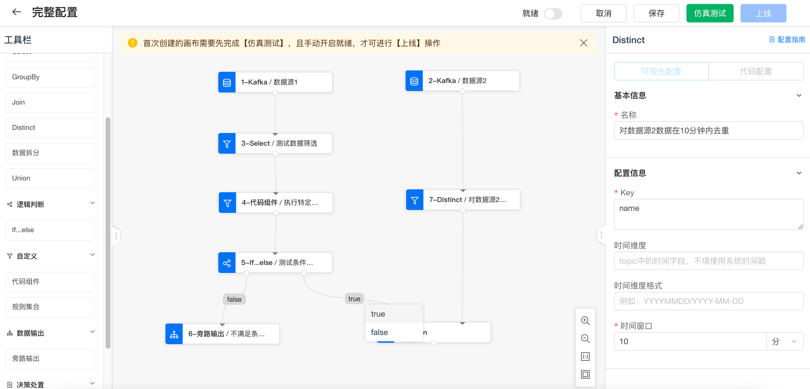
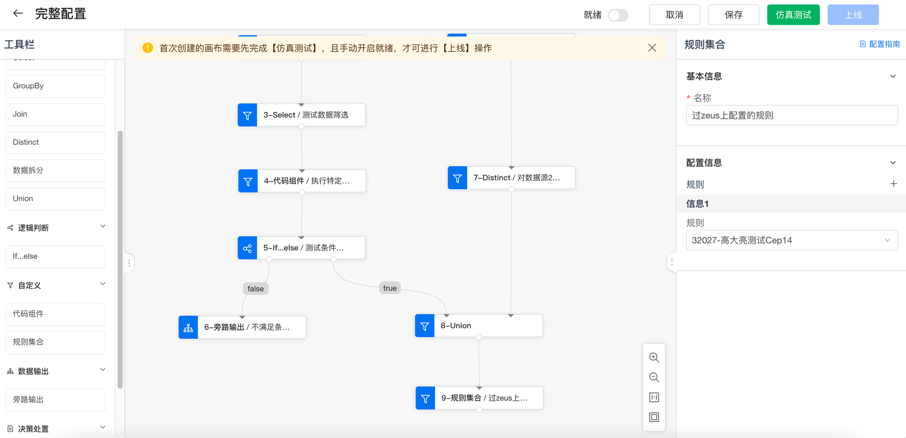
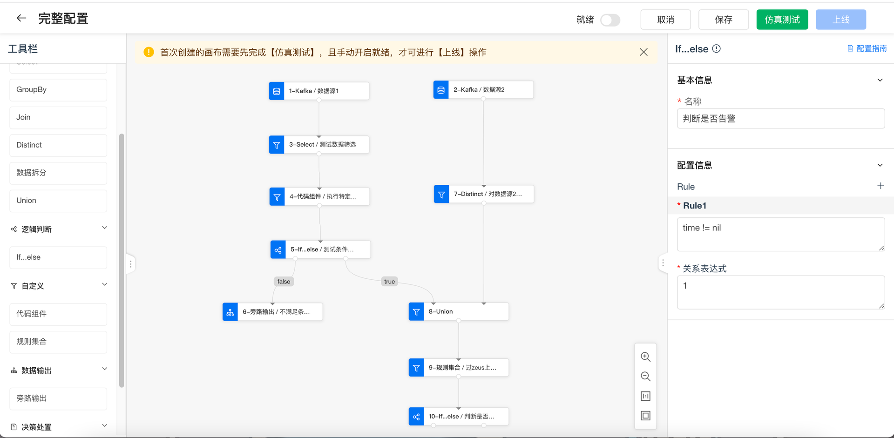
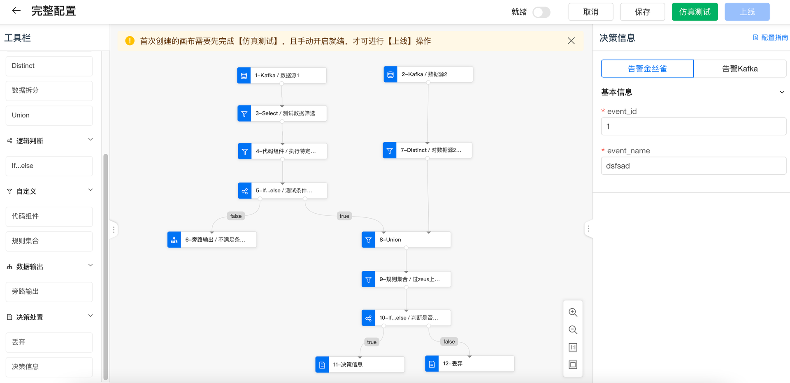

画布中的组件包括常规的流数据处理（join,groupby,distinct，数据拆分等）逻辑判断（if-else等），规则与自定义代码执行，决策（金丝雀告警，落kafka，丢弃等）。
|
说明
|
页面
|
|
【入口】
Zeus-->策略部署-->画布
【基础配置】
- 点击进入画布基本配置页，拖拽两个kafka组件到画布中上方，按照说明：画布- Kafka配置指南先将两个数据源配置完毕
|

|
- 针对kafka数据源1进行数据流处理
- 从左侧拖一个select组件到画布中，置于kafka数据源1下方
- 点击kafka数据源1，组件下方会出现一个圆点，点击空白圆点进行拉线至select组件上方的空白圆点，将两个组件连起来
- 根据说明：画布- Select组件按需配置select的逻辑
|

|
- 从左侧拖一个代码组件到画布中，置于select组件下方
- 将select组件和代码组件连起来
- 根据说明：画布- 代码组件按需配置代码组件的逻辑
|

|
- 从左侧拖一个if...else组件到画布中，置于代码组件下方
- 将代码组件和if...else组件连起来
- 根据说明：画布- If...Else组件按需配置if...else组件的逻辑
|

|
- 因为if...else组件为判断组件，会有两个结果，因此连在后面的会有两个组件
- 假设按照此画布逻辑，不满足测试条件的会旁路输出，满足条件的会与kafka数据源2的处理结果汇总之后再进行处理
- 从左侧拖一个旁路输出组件至于if...else组件左下方，
- 用左边的连线将if...else组件和旁路输出组件连起来
- 点击左边的连线，可以选择逻辑是true还是false的进入旁路输出
- 根据说明：画布- If...Else组件、说明：画布- 旁路输出组件按需配置
|

|
- 处理kakfa数据源2
- 从左侧拖一个Distinct组件到画布中，置于kakfa数据源2组件下方
- 将kakfa数据源2组件和Distinct组件连起来
- 根据说明：画布- Distinct组件按需配置Distinct组件的逻辑
|

|
- 处理完kakfa数据源2后，需要将处理完的Kafka数据源1和kafka数据源2进行汇总
- 从左侧拖一个Union组件到画布中，置于if...else组件和Distinct组件下方
- 将if...else组件右边的线连到Union组件的左上方，Distinct组件的线连到Union组件的右上方，即完成两个数据流的汇合
- 参考说明：画布- Union组件使用说明
|

|
- 对汇总后的数据流进行后续的数据加工
- 假设需要过zeus上的规则集合
- 从左侧拖一个规则集合组件到画布中，置于Union组件下方
- 将Union组件和规则集合组件连起来
- 参考说明：画布- 规则集合组件按需配置规则集合
|

|
- 假设需要对过完规则集合的数据流进行规则结果判断
- 从左侧拖一个if...else组件到画布中，置于规则集合组件下方
- 将规则集合组件和if...else组件连起来
- 根据说明：画布- If...Else组件按需配置if...else组件的逻辑
|

|
- 假设按照此画布逻辑，规则结果为true的会进行决策告警，规则结果为false的会丢弃
- 从左侧拖一个决策输出组件和丢弃组件至于if...else组件左下方，
- 用左边的连线将if...else组件和决策信息组件连起来，用右边的连线将if...else组件和丢弃组件连起来
- 同样可以在连线上进行true or false的修改
- 根据说明：画布- 决策信息配置指南、说明：画布- 丢弃配置指南按需配置
|

|